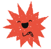
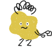
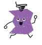
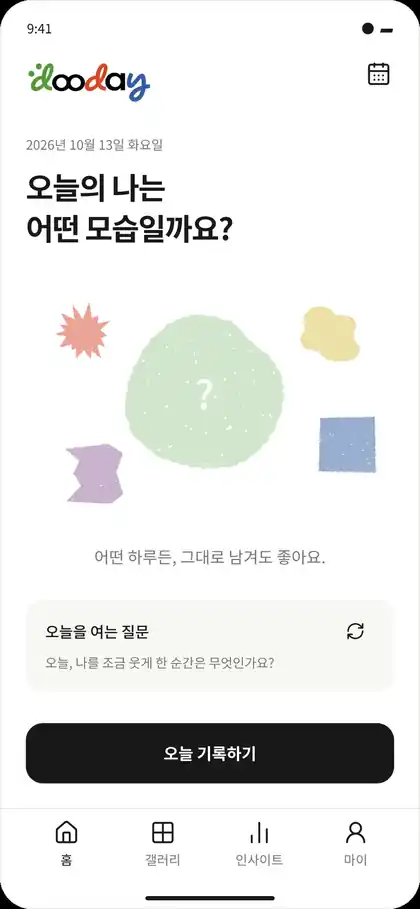
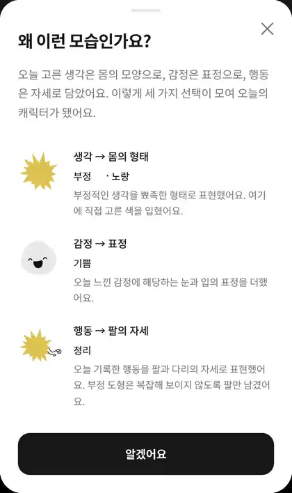
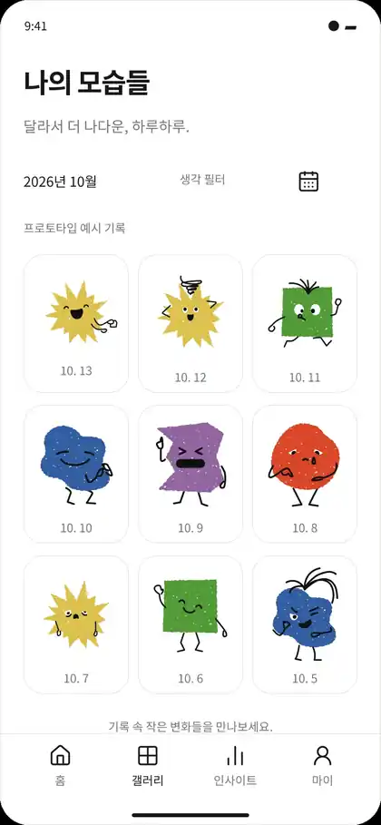
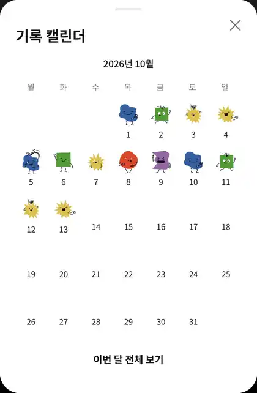
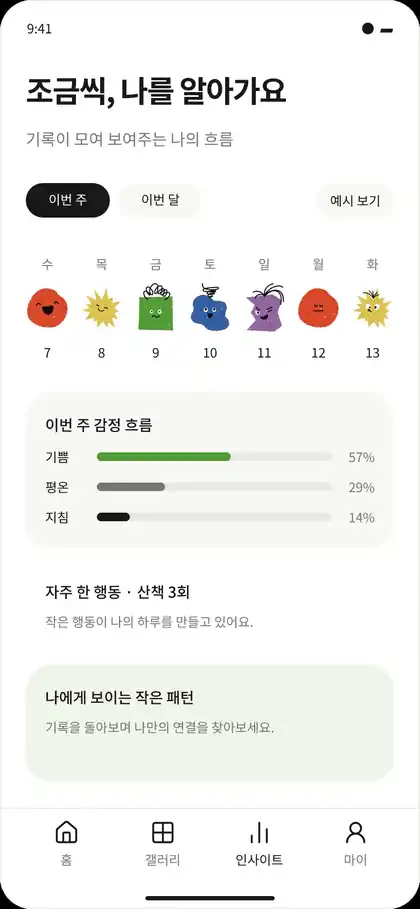
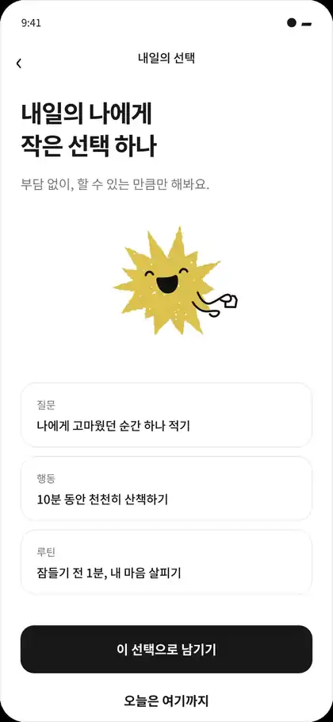

오늘 머릿속에 머문 생각은 어떤 모양인가요?
떠오르는 만큼만 적고, 그 생각에 가까운 모양 하나와 오늘의 나에게 입혀줄 색 하나를 골라요.
긍정부정중립불확실회피
오늘의 나를 그리는 캐릭터 다이어리
생각은 모양으로, 감정은 표정으로, 행동은 자세로. 세 가지만 고르면 오늘 하루가 나만의 캐릭터로 남아요. 긴 일기를 쓰지 않아도 괜찮아요.




기록 방법
쓰고 싶은 날엔 한 줄을 적고, 아닌 날엔 건너뛰어도 돼요.
떠오르는 만큼만 적고, 그 생각에 가까운 모양 하나와 오늘의 나에게 입혀줄 색 하나를 골라요.
기쁨부터 허무함까지, 20가지 표정 중에서 오늘을 가장 잘 보여주는 하나를 골라요. 잘 모르겠는 날엔 그렇다고 남겨도 돼요.
정리, 휴식, 산책, 미루기까지. 작은 행동도 나의 하루가 돼요. 아무것도 못 한 날엔 그 버튼을 누르면 돼요.
고른 모양에 표정과 자세가 더해져 오늘의 캐릭터가 태어나요. 왜 이런 모습이 됐는지도 바로 확인할 수 있어요.
캐릭터 문법
모든 캐릭터는 같은 규칙으로 만들어져요. 그래서 모아보면 내 하루의 흐름이 읽혀요.
둥글게 흘러가는 생각은 동그란 몸이 돼요.

캐릭터를 누르면 '왜 이런 모습인가요?'에서 내 선택이 어디에 담겼는지 보여줘요.
모아보기
쌓인 캐릭터를 나란히 놓으면 평소엔 지나쳤던 나의 흐름이 보여요.



내일의 선택
오늘을 남긴 다음엔 내일 해볼 만한 작은 일을 하나 골라요. 부담 없이, 할 수 있는 만큼만. 오늘은 여기까지 해도 괜찮아요.

dooday의 약속
알림으로 다그치거나 연속 기록을 강요하지 않아요. 기록하고 싶은 날부터 시작하면 돼요.
노랑이 꼭 기쁨일 필요는 없어요. 그날의 나에게 어떤 의미인지는 내가 정해요.
dooday는 성격을 분류하거나 마음 상태를 진단하는 앱이 아니에요. 나를 표현하는 기록 도구예요.
종이 위에서도
휴대폰을 잠시 내려놓고 싶은 날엔 주간 플래너에 캐릭터 스티커를 붙이고, 미니 노트에 짧은 문장을 남겨보세요. 앱 없이도 쓸 수 있어요.
자주 묻는 질문
지금은 프로토타입 단계예요. 출시 일정과 지원 OS(iOS·Android)는 확정되는 대로 이 페이지에서 알려드릴게요.
생각 모양, 감정 표정, 행동 자세를 하나씩 고르면 끝이에요. 글은 쓰고 싶을 때만 적으면 돼요.
그냥 비어 있어요. 캘린더와 갤러리는 기록한 날만 보여주고, 빠진 날을 탓하지 않아요.
앱과 종이 기록의 자동 연동 여부는 아직 정해지지 않았어요. 둘 다 따로 써도 충분하도록 만들고 있어요.
없어요. dooday는 의학적·심리적 효과를 보장하거나 진단하지 않아요.
곧 만나요
잘 보낸 하루가 아니어도 괜찮아요. dooday가 출시되면 가장 먼저 알려드릴게요.